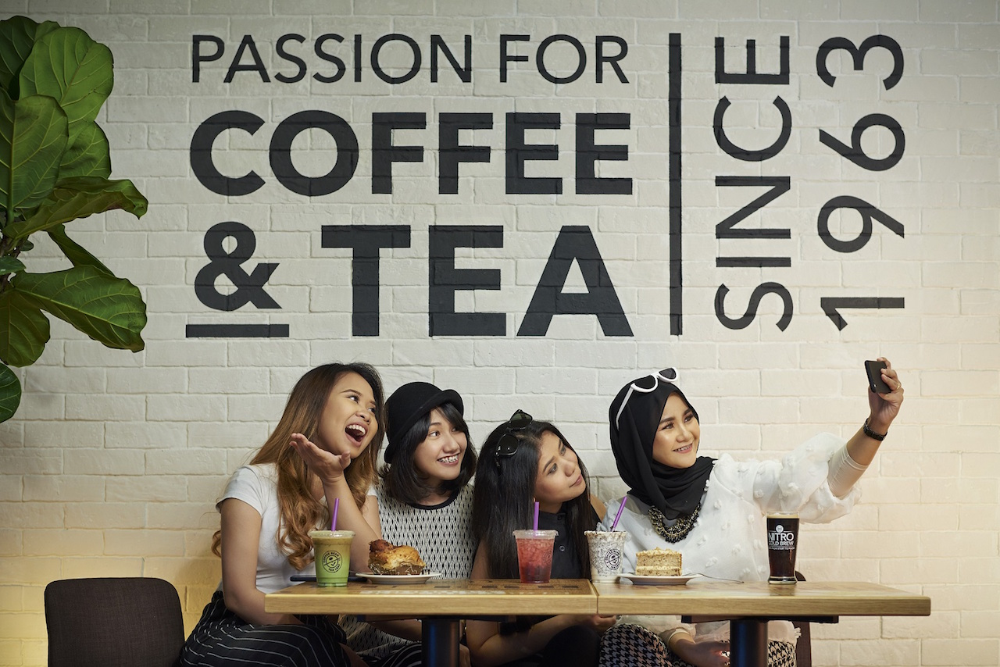
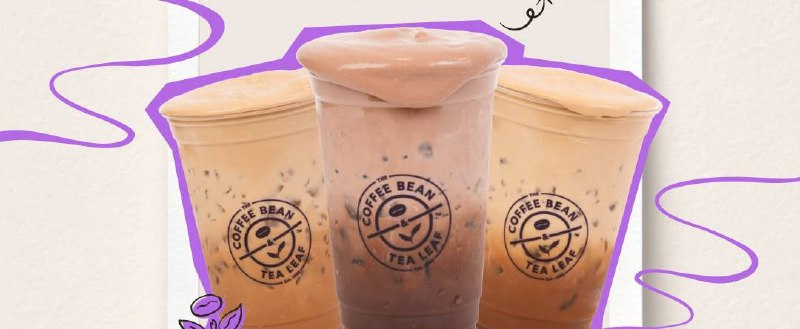
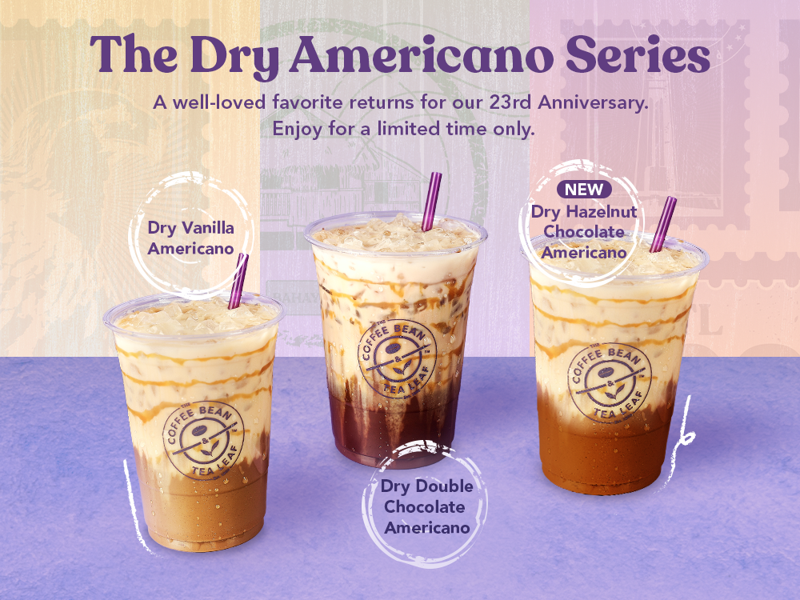
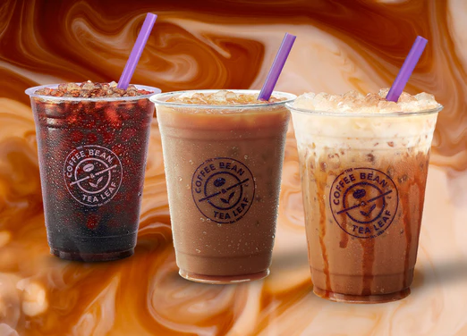

Order Queue Crowded
Long queues during busy periods can make customers spend more time waiting before placing their orders.
THE COFFEE BEAN & TEA LEAF

The Coffee Bean & Tea Leaf Malaysia
Explore the Case Study ↓HOME — BACKGROUND
The Coffee Bean & Tea Leaf® is a café brand offering coffee, tea, beverages and food products. In Malaysia, the brand combines the traditional café experience with digital customer services.
As customer behaviour becomes increasingly digital, the MyCBTL App provides a digital platform for ordering, rewards, vouchers and café information.

A refreshing seasonal drink featuring a smooth coffee base with a choice of sweet Vanilla or rich Hazelnut flavour.

A bold and refreshing Americano topped with a smooth Espresso Cream Crown, available in Vanilla or Hazelnut.

A smooth and satisfying coffee experience made for customers who enjoy a rich and classic flavour.
LEADERSHIP
Amar Syah represents the leadership behind The Coffee Bean & Tea Leaf Malaysia, supporting the brand's growth and development in the Malaysian café market.
His leadership reflects the brand's continued focus on delivering quality products, strong customer experiences and adapting to changing consumer needs through digital innovation.
THE PROBLEMS
For this case analysis, the challenges focus on improving the digital café experience by making ordering more convenient, reducing confusion and helping customers manage busy café periods.
Long queues during busy periods can make customers spend more time waiting before placing their orders.
Customers may not know how crowded a café is before visiting, especially during peak hours.
Multiple drink customisations can increase the risk of incorrect orders and misunderstandings.
New customers may feel overwhelmed when choosing from a wide range of coffee, tea and blended beverages.
THE PROCESS OF IDENTIFYING SOLUTIONS
The innovation process begins by identifying common customer difficulties at CBTL. These problems are then analysed and transformed into practical digital features for a smarter café experience.
Identify common problems such as crowded queues, peak-hour congestion, order mistakes and difficulty choosing from the menu.
Understand how these problems affect customers' time, convenience and overall café experience.
Analyse which digital improvements can directly reduce waiting, manage crowds, prevent mistakes and simplify drink selection.
Generate features such as a digital queue, live crowd indicator, visual order confirmation and AI drink recommendations.
Combine the selected ideas into one integrated digital solution: the MyCBTL App.
THE SOLUTIONS
Long queues can make the ordering process uncomfortable, especially when many customers arrive at the same time.
You are #4 in the queue
SOLUTION 01
A digital queue system allows customers to join the queue through the MyCBTL App without physically standing in line. Customers can monitor their queue number and estimated waiting time while waiting comfortably.
Customers can wait comfortably while monitoring their queue.
Cafés can become heavily crowded during peak hours, resulting in longer waiting times and an uncomfortable customer experience.
SOLUTION 02
A live crowd indicator displays the current crowd level of each café. Customers can check whether a café is busy before visiting and choose a less crowded location when necessary.
Customers can avoid busy periods and crowded cafés.
Multiple customisation options can increase the possibility of incorrect orders, especially when customers select several drink preferences.
SOLUTION 03
Before payment, customers receive a visual summary of their selected drink, size, temperature, sugar level and customisation. This gives customers one final opportunity to check their order before confirming it.
Customers can review every customisation before payment.
New customers may feel overwhelmed by the large number of drinks and customisation options available.
SOLUTION 04
An AI-powered recommendation feature helps customers choose drinks based on their taste preferences. Instead of browsing the entire menu, customers can answer a few simple questions and receive a personalised recommendation.
Customers can quickly discover drinks that match their taste.
THE BENEFITS OF THE SOLUTIONS
Digital queueing allows customers to join and monitor their queue without standing in a crowded line.
Live crowd information helps customers choose a suitable café and avoid busy periods.
Visual order confirmation allows customers to review their drink customisation before placing the order.
AI drink recommendations help customers quickly discover drinks that match their preferences.
Digital queueing helps organize customer flow and reduce physical congestion around ordering areas.
Crowd information can help distribute customers across different cafés and reduce pressure during busy periods.
Visual confirmation gives customers an opportunity to correct customisation details before the order is submitted.
AI recommendations make menu discovery easier while creating a more personalized digital experience.
ABOUT ME
INDIVIDUAL ASSIGNMENT
Bachelor of Interactive Media Technology with Honours
SMM10703 Innovative and Creative Skills
Phone 011-53641412
Email nrsyzrhmn1412@gmail.com
Address Based in Selangor, Malaysia
Date of Birth December 14th, 2003
"What is meant to be will always find its way."
CONCLUSION
This case study shows that creativity and innovation can be used to improve existing café services and customer experiences.
Identifying real customer problems is important before developing a suitable and effective digital solution.
The MyCBTL App provides practical solutions for reducing waiting time and improving the overall ordering process.
Digital features such as queue management and order confirmation can create a smoother and more accurate customer experience.
Personalised digital features, such as AI drink recommendations, can make menu selection easier and more engaging for customers.
Overall, continuous innovation can help CBTL Malaysia respond to changing customer needs and deliver a smarter, more convenient café experience.
PERSONAL REFLECTION
I learned that innovation does not always mean creating a completely new product. It can also mean improving an existing service to make it more convenient and valuable for customers. This case study helped me understand the importance of identifying a real problem before developing a creative solution.
LET'S CONNECT WITH ME